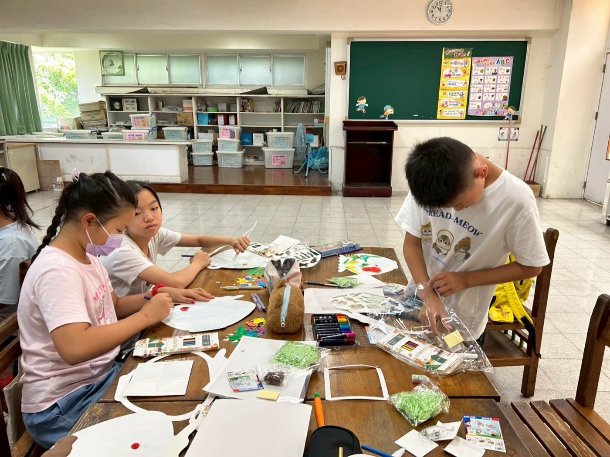
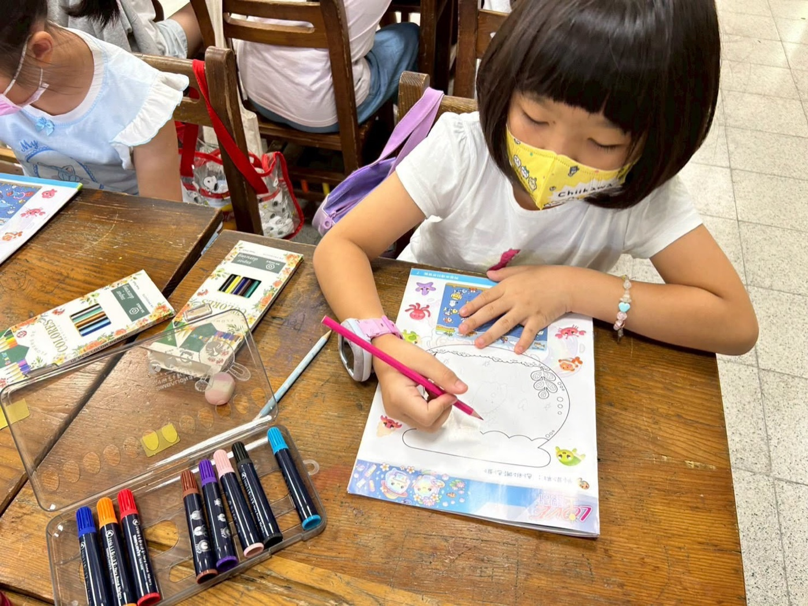
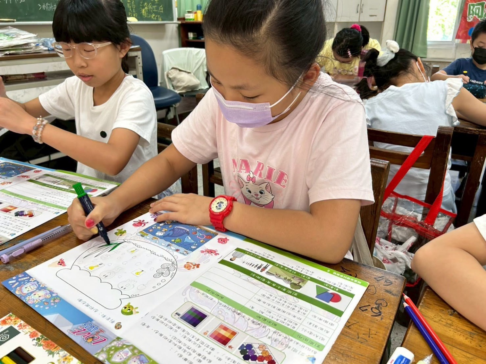
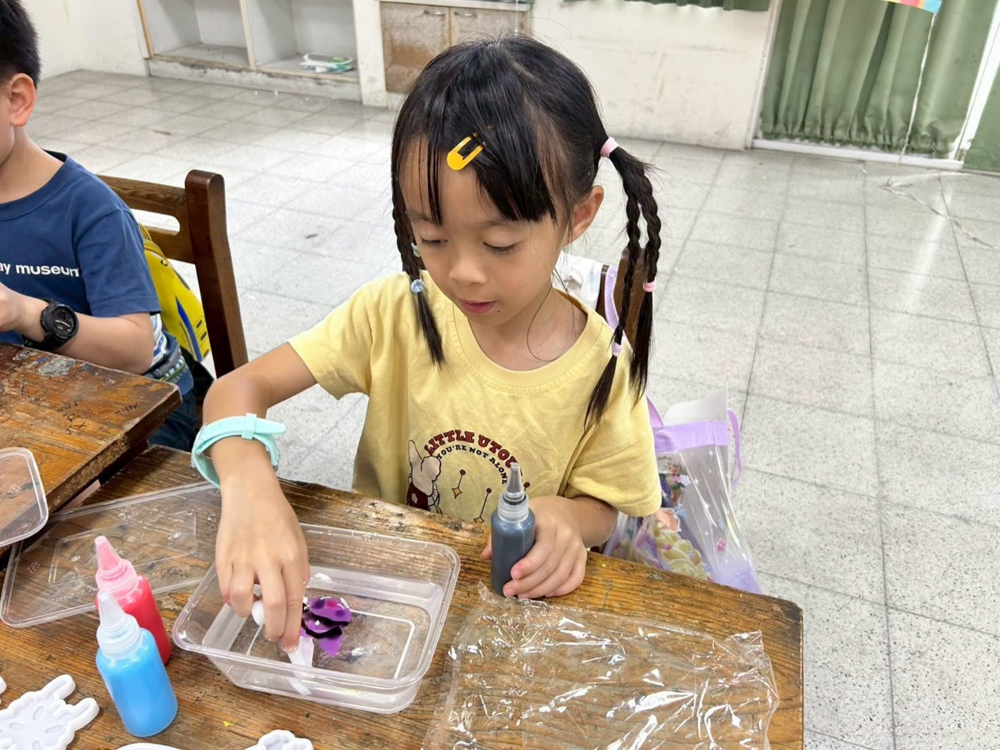
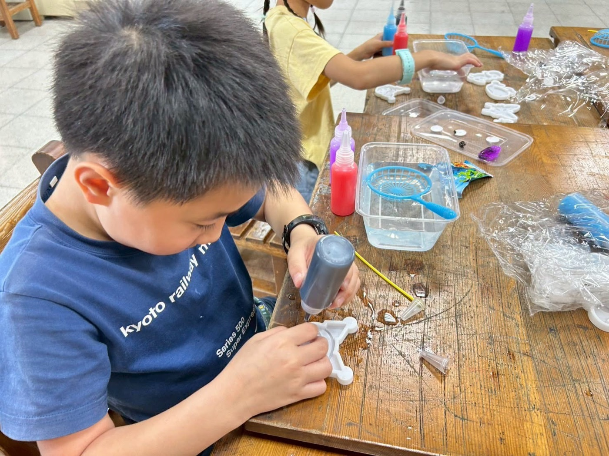

This summer, Hsinmin's young artists stepped into a world of color and creativity — the Enchanted Art Design Camp: Magic Water Sprites! Over two wonderful days, every child became a little designer, pouring their imagination into four amazing hands-on projects.





Day 1 — First Steps into Aesthetic Design
- Butter Glue Mirror — Using color-matching skills and a touch of dreamy style, each child created their very own one-of-a-kind mirror. The result? Pure sparkle!
- Artificial Snow Shaved Ice — Combining a summer theme with hands-on craft, children shaped a bowl of "shaved ice" that looked so real it made everyone want a taste!
Day 2 — Dream Underwater World
- Paper Aquarium — Combining painting and 3D design, children brought a vibrant ocean to life on paper — colorful fish, swaying seaweed, and all!
- Water Sprite Catching Experience — The afternoon finale! With colorful gel and tiny nets in hand, the whole room filled with laughter and excitement.
Watching the children look at each other's finished creations — eyes wide, faces glowing with pride and confidence — that was the most beautiful scene of the whole summer. Every child brought home a masterpiece they made with their own two hands, and a heart full of inspiration to keep creating.
Congratulations to all our little designers! Keep exploring, keep making, and keep dreaming big. 🌈🌈
【新民國小2026七月營隊《幻彩水精靈》盛夏美學設計營】🎉
在二天的美學之旅中，孩子們化身小小設計師，揮灑無限創意與想像力，度過了最繽紛的夏日時光。
Day 1｜美學初體驗
奶油膠鏡子：發揮色彩搭配巧思，打造獨一無二的夢幻少女心鏡子！
人造雪剉冰：結合夏日主題，親手做出一碗擬真又清爽的雪花剉冰！
Day 2｜夢幻海底世界
紙上水族館：結合彩繪與立體設計，把繽紛的海洋世界搬上紙張！
水精靈撈魚體驗：下午重頭戲登場！大家在歡笑聲中大展身手，嗨翻天～
看著孩子們高興地互相欣賞彼此的作品，臉上洋溢著自信與成就感的笑容，就是這個夏天最美的風景！恭喜孩子帶回自己用心創作的美作！相信這一場藝術饗宴，將讓孩子帶回滿滿的創作靈感！鼓勵孩子們在家裡也可以嘗試做做看不同風格的作品喔！
Words About Art & Creativity英語學習角 · 藝術與創作相關的小單字
Six key words — tap 🔊 to listen, then try the conversation and quiz.
六個關鍵字，點 🔊 聽發音，再試試對話和小考。
情境：兩個好朋友聊他們在美學設計營的體驗。